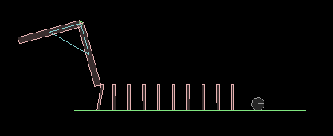
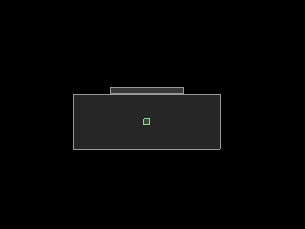
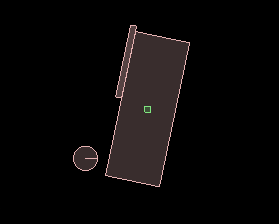
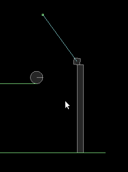
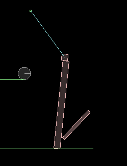
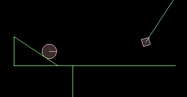
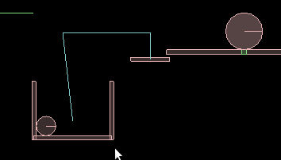
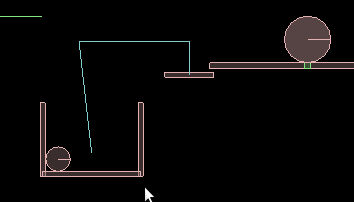
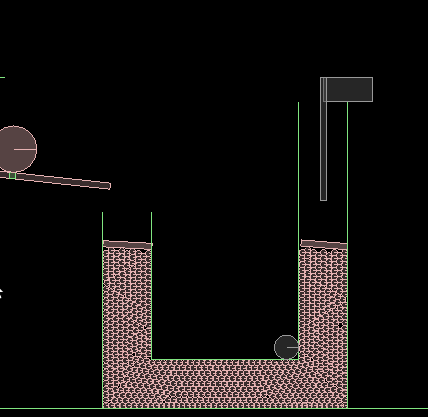
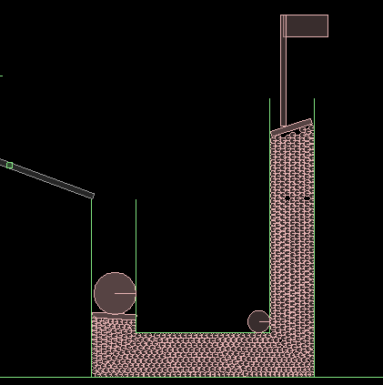

According to Wikipedia, a Rube Goldeberg Machine is "a deliberately over-engineered or overdone machine that performs a very simple task in a very complex fashion, usually including a chain reaction." The machine derives its name from the American cartoonist and inventor Rube Goldberg.
As a part of our project we have designed a hydraulic lifter machine which is initiated after a chain of steps .The entities used by our machine are L-shaped rotationary rod , balls , pendulum, dominos , wedge , curved paths , pulley , rotationary slabs or platforms and finally the hydraulic lifter which is a U-shaped tube which contains water. Water was implemented using large number of balls. Finally our machine ends with the hoisting of the flag. We took this idea from the mario game. Whenever mario completes any level, a flag gets hoisted. It is a symbol of victory for him, as he successfully overcomes all the obstacles in his path and reaches destination. Thus the flag in our Rube Goldberg machine is a symbol of success!
Our Rube Goldberg machine works as follows:

Initially the L-shaped object hits the dominoes, as a result of which ball, in front of dominoes gets a hit and starts rolling.
 
There is a box hinged at it's center of mass as shown in the figure. The ball falls on this box near it's left up corner and disturbs the equillibrium of the box by providing it anticlockwise torque. As the box starts rotating, the bar kept on it gets an upward push and starts performing projectile motion.
 
The projected bar hits the vertical support on which pendulum bob is kept. Hence pendulum starts oscillatary motion and hits the ball at it's left.

Ball comes into motion, climbs wedge and falls from the other side of wedge on a curved surface. In this way, continuing it's motion it comes out and falls into a container attached at left side of pulley
 

Thus equillibrium of pulley gets disturbed and hence the container moves in downward direction. Concurrently the bar connected at the other end of pulley moves upward and disturbs the equillibrium of plank hinged at it's center. The ball kept on that plank falls in the left column of hydraulic lift causing the other column to move upward. A "Flag" is kept on the other side of hydraulic lift. It starts hoisting along with upward motion of lift.
 
And thus in the end, the flag gets hoisted!
Project Report[link] Project Video[link]